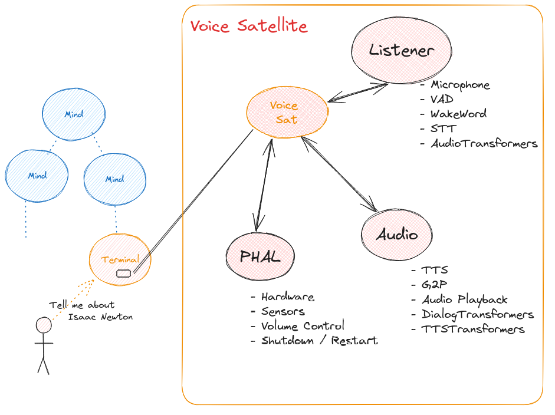

HiveMind Voice Satellite
OpenVoiceOS Satellite, connect to HiveMind
Built on top of ovos-dinkum-listener, ovos-audio and PHAL

Install
Install dependencies (if needed)
sudo apt-get install -y libpulse-dev libasound2-dev
Install with pip (hivemind pypi version is VERY outdated)
$ pip install git+https://github.com/JarbasHiveMind/HiveMind-voice-sat
Usage
Usage: hivemind-voice-sat [OPTIONS]
connect to HiveMind
Options:
--host TEXT hivemind host
--key TEXT Access Key
--password TEXT Password for key derivation
--port INTEGER HiveMind port number
--selfsigned accept self signed certificates
--help Show this message and exit.
Configuration
Voice satellite uses the default OpenVoiceOS configuration ~/.config/mycroft/mycroft.conf
See configuration from ovos-dinkum-listener for default values
Plugins
Voice Sat supports plugins for:
-
Microphone
-
Audio Transformers
-
Dialog Transformers
-
TTS Transformers
You can optimize your voice satellite for a variety of platforms by selecting different plugin combinations